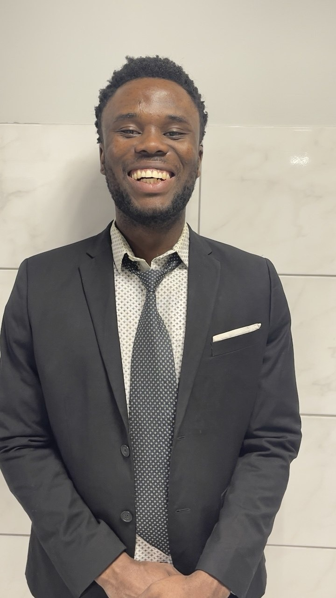

Модель / актёр · Санкт-Петербург
ИКЕДЕСТИНИ
Характер в каждом кадре.
Фотосессии, видеосъёмки
и новые образы.

МОДЕЛЬ · АКТЁР178 смРост
52Размер одежды
45Размер обуви
В кадре.
Городской стиль, перевоплощения
и моменты со съёмок.
Знакомство
Лицо.
Образ.
Характер.
Я — Ике Дестини, модель и актёр из Санкт-Петербурга. Принимаю участие в фотосессиях и видеосъёмках.
Открыт к предложениям для рекламы, музыкальных клипов, модных съёмок и творческих проектов.
Для сотрудничества